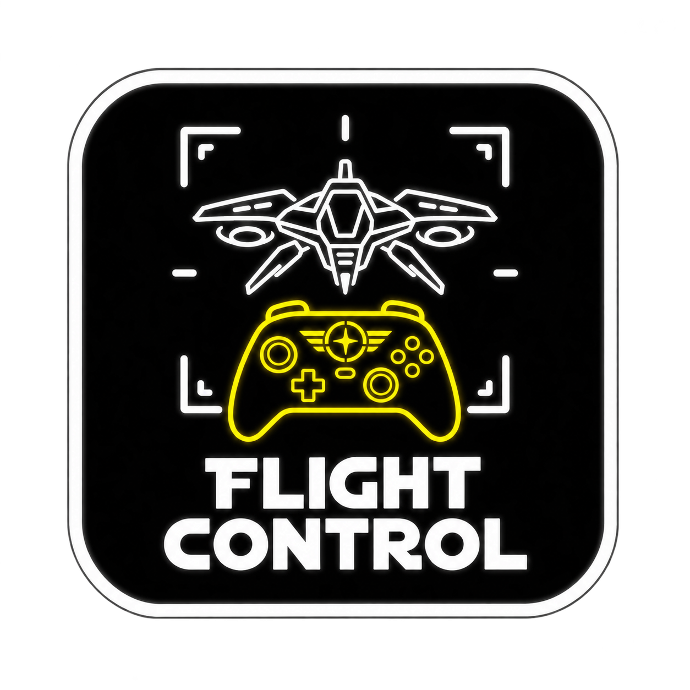

Flight Control Console
Fate of the Galaxy · external setup and command-wheel macrosThis app configures the separate FotG Gamepad Wheel mod. It also edits native pilot sensitivity and deadzone. The wheel mod and its companion must be installed for the in-game D-pad panels and macros to work.
1. Select the game and pilot
- Run Fate of the Galaxy once and create a native pilot before installing the wheel. Exit the game.
- Extract the complete package. Keep
Assetsand this help file besideControllerSetup.exe. - Select the updated game installation folder containing
kn_portable. If the app is inside that folder, it normally detects it. Use Browse folder to correct the path. - Select the pilot you play. Reload pilots refreshes the list after a new pilot is created.
- Choose the XInput slot that reports your controller online. This slot controls the live preview. It does not change the joystick selected in the game.
2. Command wheel layout
| D-pad | Panel |
|---|---|
| Up | Ship systems |
| Down | Squad commands, using the game's valid recipient and order menus |
| Left | Targeting: choose the ships X cycles, select subsystems or turrets, return to hull, clear target, or cycle subsystems in the up-left slot without aiming at them |
| Right | Four macros on cardinal slots; mission groups on diagonals |
Use the stick to select, A to confirm, and B to go back or close. L3 matches target speed and tap R3 cycles subsystems on the targeted ship; hold R3 sends N to toggle mouse movement when no wheel is open. In a mission group, A selects a command and B returns to macros. Up-left opens responses 1–5, up-right responses 6–0, down-left Dock / nav, and down-right Other mission. Numbered choices send actual number keys; Dock / confirm sends Enter, which is context-sensitive. LB + RB held together requests hyperspace; FotG still checks whether a jump is allowed. The wheel checks the current mission state. Unavailable actions stay inactive. Multiplayer support is limited for actions that directly change ship energy or target a subsystem.
Tap Menu / Start to pause. Hold it for 500 ms to cycle Cockpit, Chase and External cameras; turn off Hold Menu cycles camera if you want Pause only. The squad command wheel gains Cycle boarding party task during Assault missions, matching keyboard 4.
The wheel now uses dark label backplates, bright text, and an amber selection outline to stay legible under fire. In this app, set Wheel Text to Medium (20 px) or Large (30 px), and turn Bold on or off. Medium Bold is the default.
Menu navigation: D-pad selects the seven main-menu choices directly and sends arrow keys in other menus. A activates the selection; B goes back. LB/RB move between tabs. Move either stick when a custom screen needs a pointer, then A or RT clicks. No touchpad or finger mouse is needed.
Flight Axes: Classic direct (tested) restores right-stick yaw/pitch and left-stick roll/relative throttle using the engine gamepad input. Classic inverted pitch reverses only the right stick's vertical direction. Game's saved setup leaves the current game bindings alone. The D-pad hold slider sets when a held direction begins looking around (150–600 ms); Disable look around makes D-pad presses open wheels immediately. Save Wheel and restart. For the closest v1 response, set sensitivity to 5 and center deadzone to 10% on Flight Response, then Apply with backup. The classic preset reserves A, B, X, L3, R3, LB, RB, Y and Start for the controller mod; check any custom bindings after changing presets.
3. Configure the four right-side slots
- Open Command Wheel / Macro Deck. The four cards correspond to the cardinal choices shown after pressing D-pad right in flight. The diagonals open Responses 1–5, Responses 6–0, Dock / nav, and Other mission.
- Give each slot a short HUD label and choose an action. For Target enemy subsystem, choose a subsystem alias such as
engines. - The app looks for
GamepadMods/FotG_Gamepad_Wheelinside the selected game. If you installed the mod elsewhere, use Browse mod and select itsFotG_Gamepad_Wheelfolder. - Close the game and click Save Wheel. The app writes
data/tables/lua/zz_fotg_wheel_config-sct.luainside the wheel mod. Restart the game to load the new settings.
Advanced layouts and profiles: Open Advanced to move a top-level wheel choice up or down, or reset a panel. The targeting tab rearranges its seven existing choices; the eighth, up-left Next subsystem slot is fixed. The squad tab rearranges only the first communications page; the game's later command menus keep their native order. Use layout keeps the changes in the app until you press Save Wheel. Export profile creates a portable JSON file with layouts, macros, flight axes, wheel text, and hold options; it contains no game path or pilot data. Import profile validates that file and loads it for review. Save Wheel and restart the game to apply it.
Buttons... opens the button actions: a quick-press action for A, B, X, Y, LB, RB, L3 and R3, and, with Use long presses on, a long-press action (250–1000 ms) for all but Y. A button with a long press runs its quick action on release. Actions marked while held, such as the afterburner, repeat as long as the button is down and take no long press. A and B still confirm and cancel inside an open wheel; the D-pad, Menu, sticks and triggers keep their roles. Reset to defaults restores the standard layout, including hold R3 for N. The R3 and RB defaults work even when the optional long-press layer is off; custom hold actions override them.
Custom axes: choose it under Flight Axes and press Edit axes... to pick the stick axis for yaw, pitch, roll and throttle, with an invert option for each. Save Wheel writes a FotG Custom preset into the add-on's control table; Install / Repair keeps it.
Updates: when a newer Flight Control is published, this app offers it once when it opens. Yes downloads it, checks its SHA-256 and shows the new Setup.exe in File Explorer for you to run; Cancel skips that version. Turn checks off with Check for updates in Setup.
Available actions: maximum shield energy, nearest enemy, enemy subsystem, match target speed, balance energy, and cycle boarding party task during Assault missions. Subsystem targeting needs a live visible enemy with a matching targetable subsystem; the exact available subsystems vary by ship. A missing or invalid target leaves the macro inactive.
4. Reserve A, B, X, Y, LB, RB, Start, L3, R3 and D-pad for the wheel
For an existing native pilot, click Reserve wheel buttons once with the game closed. The app backs up that pilot and the game settings INI, then clears only joystick buttons 0–5 (A, B, X, Y, LB, RB), 7–9 (Start, L3, R3) and D-pad values 128–131 from the native pilot bindings. This prevents the original controls from firing at the same time as the wheel. The companion maps RT to primary fire after A is reserved. Other bindings and controller selection are preserved.
If the pilot uses another format or does not contain those values, the app leaves it alone. New pilots created later may need the same action. The package installer can reserve these values for all existing version-4 pilots with a backup.
5. Tune flight response
| Setting | Meaning |
|---|---|
| Sensitivity (0–9) | The game's native joystick response setting. |
| Center deadzone (0–45%) | Input ignored around stick center. Too much reduces fine control. |
| Use mouse to fly | Changes the game's native mouse-flight option. Leave unchecked for joystick flight. |
- Release both sticks and rest the controller on a stable surface.
- Click Sample center, leave the sticks untouched for several seconds, then click Finish sample.
- The suggested deadzone is the largest observed axis displacement plus three percentage points, capped at 45%.
- Close the game, click Apply with backup, then test the response in flight.
This samples software drift; it does not recalibrate controller firmware. Moving a stick during sampling raises the result, so start again if that happens.
6. Backups and restore
Native pilot and INI backups are stored in timestamped folders under kn_portable/HardLightProductions/FreeSpaceOpen/ControllerSetupBackups. Restore latest backup restores the latest matching pilot and the entire backed-up INI, and backs up current files first. It can undo a button reservation, but it also restores the other pilot settings saved at that time.
When a macro config already exists, Save Wheel copies it to FotG_Gamepad_Wheel/ConfigBackups before replacement. It does not edit the base game's scripts or campaign saves.
Troubleshooting
- No wheel mod: install the separate mod, then choose the updated game root or its
FotG_Gamepad_Wheelfolder. The folder must contain the wheel Lua runtime. - No controller: try XInput slots 0–3 and confirm the handheld is in gamepad mode.
- No pilots: create a pilot in the game, then select the correct portable installation.
- Save or reserve blocked: close all FreeSpace Open engine instances.
- Macros unchanged in game: restart the game after saving and confirm the launcher loads the wheel mod.
- Help, About or icon missing: extract the complete package, not just the executable.
Window: F1 or ? opens this guide; the i button opens About and attributions. The other top-right controls minimize, maximize, and close. Drag the heading to move the window or double-click it to toggle maximize.
By Manic Trash Panda, coded with ChatGPT. Questions: dev@manictrashpanda.dev. Windows 10/11 x64 and .NET Framework 4.x. The app's macro file contains only selected action IDs, subsystem aliases, and display labels.